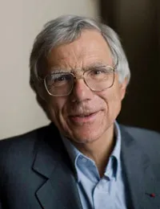

Notre réseau — 01
Cofondateurs et parrains
Les visages et les forces à l'origine de l'association
Les visages et les forces à l'origine de l'association

Première femme spationaute européenne dans l'espace, elle est depuis 2010 présidente d'Universcience, l'institution qui regroupe deux centres scientifiques à Paris, la Cité des Sciences et de l'Industrie et le Palais de la Découverte.

Astrophysicien élu à l'Académie des Sciences, ancien Directeur de l'École Supérieure d'Astrophysique d'Île-de-France. Il s'est associé à d'autres physiciens pour créer La main à la Pâte ainsi que l'Office for Climate Education, deux mouvements mondiaux destinés à rénover l'enseignement des sciences et du climat dans les écoles.

Directrice et co-fondatrice de l'association, Clémentine utilise son expérience d'avocate internationale, juriste parlementaire, conférencière et directrice de projet pour mener à bien la mission de l'association.
Co-pilote des expéditions aériennes et membre de la Société des Explorateurs Français ainsi que de La Guilde, sa curiosité, sa force de persuasion, son optimisme et sa pugnacité sont à l'origine de notre association.

Diplômé en ingénierie aéronautique à Centrale Lyon, il pratique le métier de pilote de ligne. Créatif et passionné par l'aviation, il développe sans cesse de nouvelles solutions techniques. Il pilote tout ce qui vole (sauf les fusées).
Il est en charge de la sélection et de la définition des missions scientifiques, et coordonne tous les sujets techniques et aéronautiques. Membre de la Société des Explorateurs Français et de la Guilde.